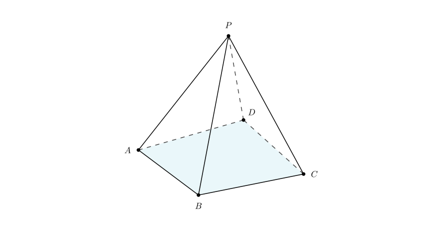
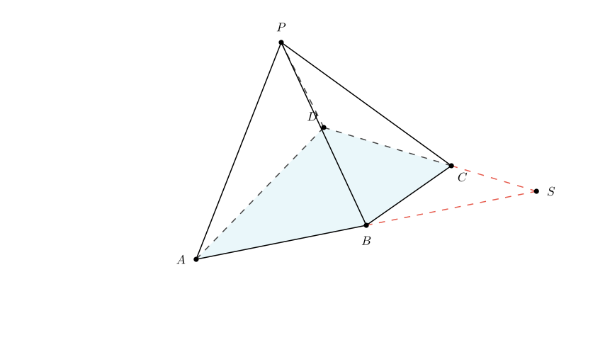
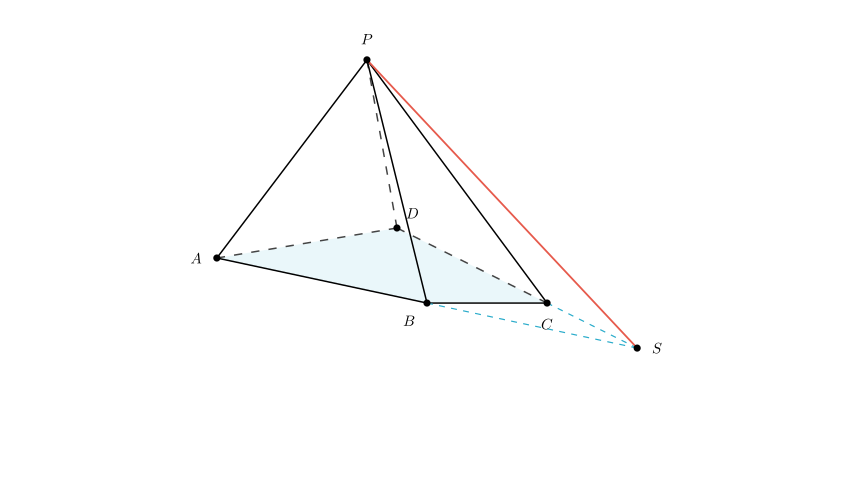
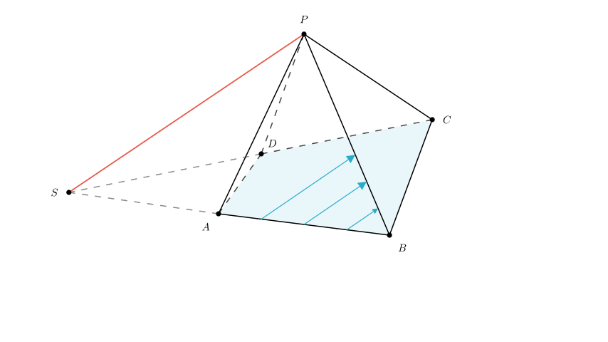

Problem Statement: As shown in the figure, in the quadrilateral pyramid $P-ABCD$, the two pairs of opposite sides of the base quadrilateral $ABCD$ are not parallel.
The serial number(s) of the correct proposition(s) among the above is $\underline{\hspace{3cm}}$.
Solution Approach: We will analyze each of the three geometric propositions step-by-step using the properties of lines and planes in space. We will use the condition that the base $ABCD$ is a general quadrilateral (no parallel sides) to derive contradictions or proofs for each statement.

Analysis of Proposition ①: "In plane $PAB$ there does not exist a straight line parallel to $DC$."
Let's assume the opposite is true: Suppose there exists a line $L$ in plane $PAB$ such that $L \parallel DC$.
If line $L$ is parallel to line $DC$, and line $L$ lies in plane $PAB$, then by the line-plane parallelism criterion, the line $DC$ must be parallel to the plane $PAB$ (since $DC$ is outside plane $PAB$).
If $DC$ is parallel to plane $PAB$, then $DC$ must be parallel to the intersection line of plane $PAB$ and plane $ABCD$. The intersection of these two planes is the line segment $AB$.
Therefore, this assumption implies that $DC \parallel AB$.
However, the problem explicitly states that "the two pairs of opposite sides of the base quadrilateral $ABCD$ are not parallel." This means $AB$ is not parallel to $DC$. This creates a contradiction.
Conclusion: The assumption is false. Therefore, no line in plane $PAB$ is parallel to $DC$. Proposition ① is Correct.

Analysis of Proposition ③: "The intersection line of plane $PAB$ and plane $PDC$ is not parallel to the base $ABCD$."
To find the intersection of plane $PAB$ and plane $PDC$, look for common points. 1. Point $P$ is clearly on both planes. 2. In the previous step, we found that line $AB$ (in plane $PAB$) and line $DC$ (in plane $PDC$) intersect at point $S$. Therefore, point $S$ lies on both extended planes.
Consequently, the intersection of plane $PAB$ and plane $PDC$ is the straight line connecting $P$ and $S$ (Line $PS$).
Since point $S$ lies on the plane of the base $ABCD$, the intersection line $PS$ intersects the base plane at point $S$. If a line intersects a plane, it cannot be parallel to it.
Conclusion: The intersection line is not parallel to the base. Proposition ③ is Correct.

Analysis of Proposition ②: "In plane $PAB$ there exist infinitely many straight lines parallel to plane $PDC$."
We have established that the intersection of plane $PAB$ and plane $PDC$ is the line $PS$.
According to the properties of line-plane parallelism: A line inside plane $PAB$ is parallel to plane $PDC$ if and only if it is parallel to the intersection line of the two planes (Line $PS$).
In the triangle (or geometric space) defined by plane $PAB$, we can draw infinitely many lines parallel to the line $PS$. Since all these lines are parallel to the intersection line $PS$, they are all parallel to the plane $PDC$.
Conclusion: There are infinitely many such lines. Proposition ② is Correct.

Final Verification and Recap:
Since all three statements are correct, the correct answer is the set of all three.
Final Answer: ①②③